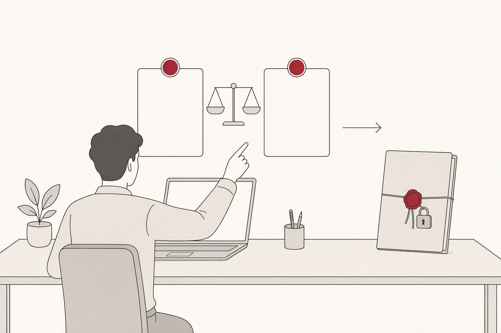
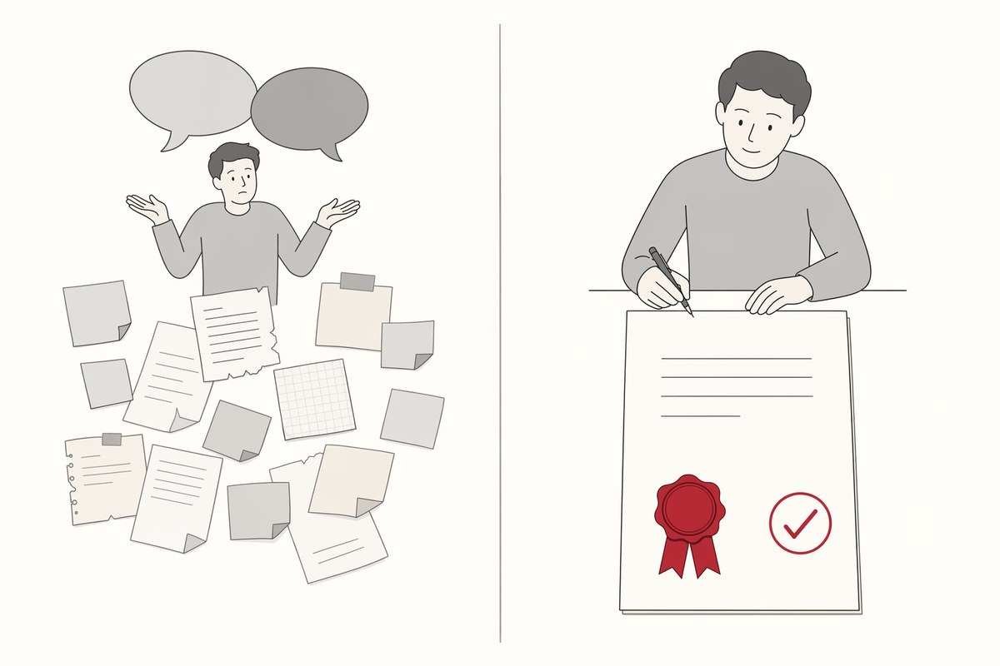
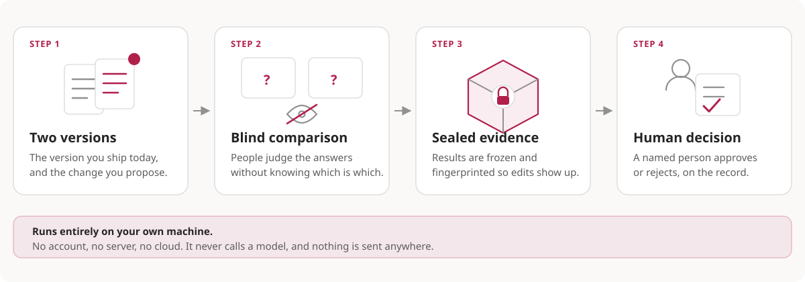

No hosted service
You never sign up, hand over an API key, or send your data anywhere.
An open format proposal for binding blind human review, the exact bytes reviewed, and a named human decision into one portable evidence bundle before shipping a prompt, agent, skill, toolset, RAG or workflow change kept in Git. The target is verification without any server or dependency on this project's tooling.

You never sign up, hand over an API key, or send your data anywhere.
The reviewed bytes are identified by dirHash; the source commit is separate provenance.
The output is plain JSON and JSONL. If this project disappears, your bundle is still readable.
It does not replace your eval runner. It imports output from Promptfoo or from your own JSON.
Most teams try a new version on a handful of examples and ship it. A month later nobody can answer “why did we approve this change?”. The only difference here is that the same effort turns into a record you can read back.

The answer to “who approved this version, and based on what?” sits in a file. Nobody has to remember it.
Someone judging their own prompt goes easy on it. Blinding does not remove that effect, but it measurably reduces it.
When you change eval tool or vendor, your past decisions do not vanish with the account. They stay with you as plain files.
The defensible space is not another review screen, annotation queue, or export feature. Mature tools already provide those. The proposed gap is binding records from those tools into one verifiable release-decision chain.
Rich eval runner, seeded sampling, CI, and portable export/import that preserves identity, runtime, traces, and optional media.
Official docsProvides pairwise annotation queues, reviewer assignment, comments, and prompt release workflows.
Official docsProvides domain-expert annotation queues, prompt versions, protected production labels, and rollback.
Official docsProvides flexible pairwise annotation and raw JSON exports containing reviewer identity and timestamps.
Official docs
Automated graders are getting close to human agreement on well-specified rubrics. Subjective quality calls still need human judgement — and for that judgement to be unbiased, the reviewer must not know which version they are looking at.
Each step hash-binds the input of the next one. In the end a third party can verify which bytes the decision rested on, without access to any server.
The example below is a simplified version of a real review screen. It never shows which answer belongs to the candidate version.
Frontier labs use the same approach. In OpenAI's GDPval work, expert reviewers compare model and human output without knowing which is which, task authors write the rubrics, and OpenAI states that its automated grader is not reliable enough to replace expert reviewers.
The academic literature also documents position bias and self-preference in LLM-as-judge setups. That is why blinding and order balancing are not optional.
A record is worth exactly as much as the things it cannot hide. Each of the six checks below closes one concrete way a study can be worthless while looking fine.
After recording a preference, the reviewer is asked which one they believed was the new version. A 90% correct-guess rate is a strong warning, but v0.1 reports only correct, incorrect, and declined counts; it emits no automatic held/failed label. Hiding a label in software says nothing about what a person can infer.
The random seed is revealed in the frozen bundle, so anyone can regenerate which reviewer saw which case. Comparisons that were planned but never filled are counted, so an unfinished study cannot present itself as a small clean one.
The case set, the rubric and both versions are hashed before the first review. Disliking the result and re-running with a different case set produces a different pre-registration digest, so the re-run becomes visible instead of silent.
58 to 38 from seven reviewers who agree is a different object from the same split from seven who do not. Observed agreement is reported, and no chance-corrected coefficient replaces it, because every correction embeds a model.
The aggregate rarely stops a release. The number people act on is the nine specific cases that used to work and now do not. That list is in the bundle, and it is the field to read first.
Release gate: manifest, directory identity, and review-log integrity must be verifiable with standard SHA-256 operations; a dependency-free POSIX verifier will ship with the conformance vectors.
This repository is being prepared for publication as a non-normative public design review under Apache-2.0. It is not an approved specification or working product. The first executable proof will be a hand-built example bundle independently verified in a second clean environment.
The GitHub repository is public and Pages is live. No npm package name or custom domain has been claimed, so formal trademark/domain review remains an executable-release gate.
Reconstruct the last two release decisions from three design partners using their current tools; test whether a separate evidence layer is worth repeating.
Produce a complete bundle with no tooling beyond a text editor and SHA-256, then verify it in a second clean environment. A format that cannot be written by hand does not get implemented.
Map every normative requirement to at least one valid or invalid test vector; only then begin the reference CLI.
These are not system requirements for a product available today. They are engineering constraints the R2 reference CLI must satisfy, each backed by a test or release gate.
This is not a support matrix. These are deployment-neutral recipes against which the format and future reference implementation will be validated. The local flow is the required baseline; CI attestation and shared bundles are optional profiles.
The effort estimate assumes one minute per comparison on average. Replace it with your own measurement.
The project does not invent an envelope, signature scheme, or transparency log. Evidence travels inside an in-toto Statement v1 and uses DSSE when signing is needed. The new part, which must be proven through conformance vectors, is the predicate describing blind human evaluation.
{
"_type": "https://in-toto.io/Statement/v1",
"subject": [
{ "name": "capability/candidate",
"digest": { "dirHash": "…" } },
{ "name": "source/revision",
"digest": { "gitCommit": "…" } },
{ "name": "evidence-bundle.tar",
"digest": { "sha256": "…" } }
],
"predicateType":
"https://<your-domain>/BlindEvaluation/v0.1",
"predicate": {
"protocol": { "mode": "pairwise", "assignmentSeed": "…",
"preRegistration": { "digest": { … } } },
"reviews": { "plannedComparisons": 110,
"includedComparisons": 104, "unfilledAssignments": 3 },
"blindingCheck": { "guessesRecorded": 92, "guessedCorrectly": 49 },
"results": {
"candidatePreferred": 58, "baselinePreferred": 38, "ties": 6,
"agreement": { "agreeingReviewerPairs": 96,
"comparableReviewerPairs": 140 },
"byCase": { "casesPreferringCandidate": 31,
"casesPreferringBaseline": 9 }
},
"limitations": [
{ "code": "reviewer-pool-single-organization",
"detail": { "name": "limitations/reviewer-pool.json",
"digest": { "sha256": "…" } } }
]
}
}A verifier must reconstruct this chain without interpreting free text:
find | xargs | sha256sum pipeline in the draft is an explanatory equivalent, not the production verifier. The published POSIX verifier must pass vectors for spaces, tabs, leading dashes, non-ASCII file names, and an empty directory.Vectors are not published yet. Once they are, “conformant” will mean passing every required vector for a stated specification version; self-declaration will not count.
Plan: vectors will be language-neutral data files; the TypeScript verifier will share no modules with the producer; core digest checks will also run through a dependency-free POSIX verifier.
This method is not for everyone. Reviewer time is expensive; if it does not pay off, do not adopt it. Tick the boxes below.
Customer support agents, internal copilots, legal and compliance text, agent tool-policy changes.
A single developer, a rarely changing prompt, tasks solved by reliable code-based scoring, and work that reduces to a detailed rubric.
These benefits must be confirmed by your own pilot. We promise no numbers.
This public design repository is Apache-2.0. The normative spec moves to a separate Community Specification repository only with its CLA, scope, notices, and governance package complete.
Read the licenseSingle-maintainer status, bus factor 1, objection path, succession plan, and machine-readable project status are now in the repository. This process makes no industry-consensus claim.
Governance · Contributing · SecurityThe first npm release must pass stage-only trusted publishing, 2FA approval, provenance, SBOM, clean-tarball install, and SHA-pinned Action gates.
Read the publication checklistNot by stars or downloads. In this category both metrics diverge sharply from real use.